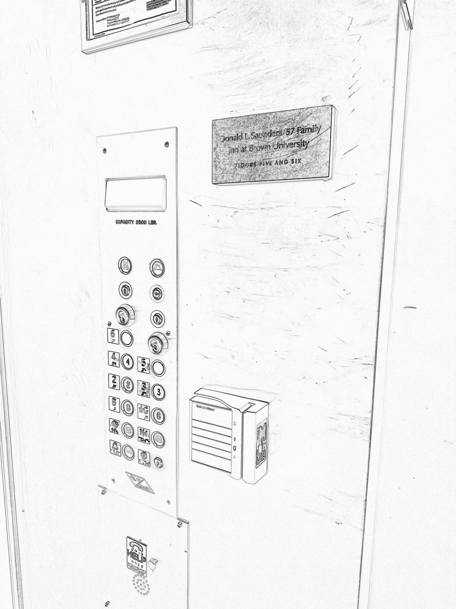
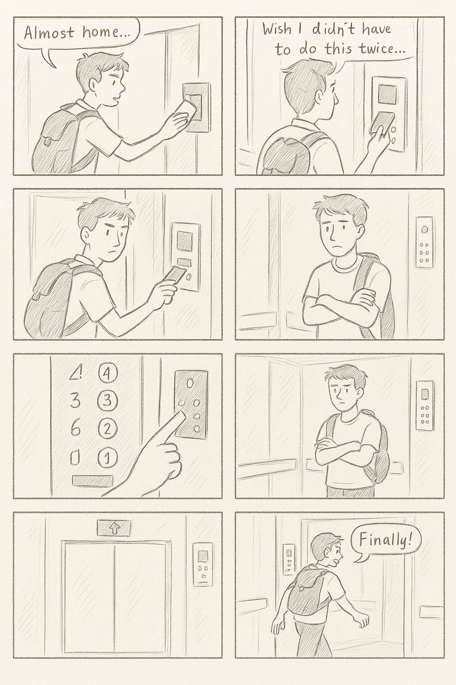

Personas & Storyboarding
Investigating everyday access through the Greg A elevator system.

The Greg A elevator at Brown University requires a swipe of a Brown ID card to both call the elevator and to select a floor once inside. While the system is reliable, students frequently express frustration about the inconvenience—especially when their hands are full or their ID is buried in a pocket. In this case study, I observed users, conducted interviews, developed personas, and created a storyboard to capture the full range of elevator interactions.
Sketch & Interview Summary
I observed students entering the Greg A elevator and documented their interactions. Most showed signs of impatience, especially when juggling items or waiting on slow door closures. Many were familiar with the process, but found it cumbersome nonetheless. I also interviewed three users.
| Question | User 1 | User 2 | User 3 |
|---|---|---|---|
| What do you do when you first approach the elevator? | Swipe immediately, already thinking about next task. | Usually pause to check if it’s already open. | Look around to make sure I’m using it correctly. |
| Was anything confusing about the interface? | Not really, just annoying that I have to swipe twice. | I didn’t realize at first I had to swipe again inside. | I still sometimes forget which side to swipe or what to press first. |
| How difficult was the process? | Easy, but slow when I’m carrying stuff. | Fine now, but weird at first compared to freshman dorms. | Still a bit stressful. I take the stairs if I can. |
| Would you change anything about it? | Get rid of the double swipe. Just let me press the floor. | Maybe clearer light/sound feedback for when it works. | Put signs near the reader explaining how it works. |
User Personas
Speedster Sam
The efficiency-minded senior who doesn’t like to wait
Bio: Sam is a 22-year-old senior who’s lived in the dorms for years and is deeply familiar with Greg A’s layout. He often carries groceries or gear from class, and finds the double-swipe requirement tedious—especially when he’s holding things. He values speed and hates repetitive friction.
Interface Problems: Sam is frustrated by the required ID swipes both outside and inside the elevator. He often wishes the elevator just knew which floor he wanted without needing interaction.
Thinks
- “I’ve done this a hundred times—why do I still need to swipe twice?”
- “This door takes forever to close...”
- “Wish I could just get to my floor instantly.”
- “There should be a smart memory system for regular users.”
Feels
- Impatient when holding items
- Annoyed by repeated authentication
- Confident in knowing how things work
- Frustrated when others slow down the process
Says
- “Let me in already!”
- “Ugh, forgot my card again.”
- “Come on, close the doors!”
- “I could’ve been up the stairs already.”
Does
- Swipes quickly and forcefully
- Presses close-door repeatedly
- Sometimes takes stairs to avoid delay
- Rushes into elevator without waiting for others
Chill Chloe
The laid-back sophomore who’s found her rhythm
Bio: Chloe is a sophomore living in Greg A after a year in freshman dorms. At first, she was intimidated by the ID swipe system and didn’t want to hold up the line. Over time, she’s become comfortable with the process and now navigates it at her own pace, rarely in a rush.
Interface Problems: Chloe occasionally forgets her card or mixes up which panel to swipe. She wishes there were clearer indicators about what comes next in the process, but overall has adapted to the system with few complaints.
Thinks
- “Did I swipe already?”
- “I hope the elevator’s not full…”
- “Is it this panel or the one inside?”
- “I’ll just wait until it opens up again.”
Feels
- Calm unless rushed
- Slightly unsure of the sequence at times
- Comfortable asking for help
- Neutral toward the interface speed
Says
- “I think I forgot my card upstairs.”
- “Go ahead, I’m not in a rush.”
- “Wait, which one do I swipe?”
- “Oh, it opened. Cool.”
Does
- Waits patiently in front of the elevator
- Holds the door open for others
- Sometimes double-checks her card swipe
- Lets the elevator go if she misses it
Nervous Natalie
The cautious transfer student trying to fit in
Bio: Natalie is a junior transfer student who recently moved into Greg A. She’s still learning the dorm’s systems and feels self-conscious when using the elevator, especially when others are around. She double-checks her actions often and is afraid of doing something wrong.
Interface Problems: Natalie finds the lack of guidance on when and where to swipe stressful. She hesitates before interacting with the interface and wishes there were clearer signals or feedback to confirm her actions.
Thinks
- “Everyone’s watching me...”
- “Did it register my swipe?”
- “Am I supposed to swipe again?”
- “I hope I don’t mess this up.”
Feels
- Nervous about making mistakes
- Uncertain about the sequence of actions
- Embarrassed if others are waiting
- Overwhelmed by unclear instructions
Says
- “Sorry, is this the right panel?”
- “You can go ahead of me.”
- “I think I did it wrong.”
- “I’m still learning how this works.”
Does
- Waits for someone else to go first
- Swipes card twice just in case
- Steps back when unsure what to do
- Frequently looks for signage or feedback
Storyboard: Speedster Sam’s Journey
Sam is returning to his dorm from the gym, juggling his bag, water bottle, and keys. He’s used to the elevator, but he’s in a hurry and doesn’t want any delays.
The storyboard follows Sam from hallway approach to elevator entry, revealing minor friction at each stage—fumbling for his card, waiting for doors to close, re-swiping to select a floor, and tapping the button multiple times. While the elevator is familiar to him, the repetition and lack of streamlining make every second feel longer.
Reflection
This case study helped me realize that even highly functional systems like the Greg A elevator can create unnecessary friction for users when interaction patterns aren't streamlined. A reliable elevator is great, but requiring multiple swipes to perform a simple task adds cognitive and physical load—especially when users are carrying bags, in a hurry, or unfamiliar with the building.
By designing personas across a spectrum of user experience—from confident to cautious—I better understood how invisible barriers form even in everyday tasks. The changes I would advocate for include clearer instructional signage, visual/sound feedback after swipes, and a reconsideration of double-authentication. These changes aim to reduce mismatches between user expectations and system behavior, following Kat Holmes’ framing of inclusive design.